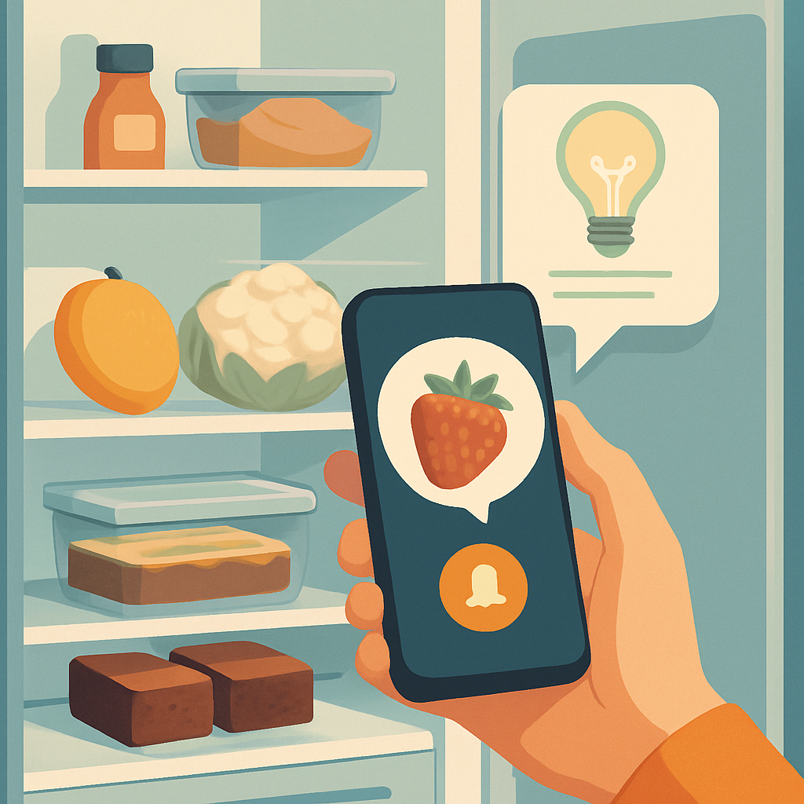

Align with values
Can AI help people reduce food waste by aligning with their long-term values, beyond immediate preferences?
Villum Experiment · 2026–2028
We explore how multilingual AI assistants can help households waste less food and make everyday choices that reflect their sustainability goals.
AMAI · Aligning Multi-Agent Interactions
for Sustainable Food Behavior

01 / The research
Awareness of food waste does not always lead to change. AMAI investigates how AI can turn sustainability goals into practical support for everyday life.
The project combines large language models, environmental tools and behaviour modelling to identify food waste risks and suggest personalised actions, from using up ingredients to finding a recipe for what is already in the fridge.
Can AI help people reduce food waste by aligning with their long-term values, beyond immediate preferences?
How can interactive systems balance persuasive communication with people’s freedom to make their own choices?
What is the real-world impact of goal-aligned AI on household behaviour, emissions and user trust?
02 / Our approach
Connecting language technology, environmental impact and human behaviour.
Combine food inventory tools and environmental impact calculators with user-defined values and behaviour modelling.
Develop a multilingual mobile assistant with daily recipe and action suggestions, using narratives tailored to users’ goals.
Plan a longitudinal study with 20–30 households to evaluate behaviour change, CO₂ reduction and user trust.
03 / People
Based at the Department of Computer Science, University of Copenhagen.
Principal investigator
Tenure-Track Assistant Professor
Postdoctoral researcher
Postdoc
MSc student
Master’s research
Visiting MSc student
Visiting master’s research
04 / Research outputs
NeurIPS 2026 Workshop on Grounded User Simulation for Model Evaluation and Training: Diversity, Fidelity, and Validity
Let’s connect
For collaboration and project enquiries, get in touch with Daniel Hershcovich.